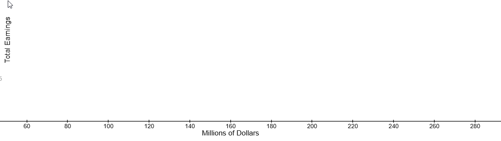
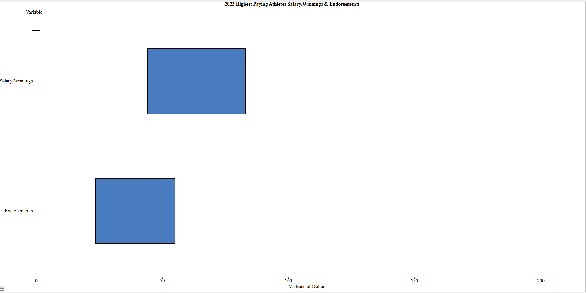

1.5 Measures of Relative Standing
The World's Highest-Paid Athletes 2023
Open the data set in Stat Crunch “World’s Highest Paid Athletes 2023”:
Source Sportico
- Identify the following statistical measures for Total Earnings:
- Mean:
$112.39 M - Standard Deviation:
$54.96 M - Mode:
No mode - Minimum:
$70 M - Lower Quartile (Q1):
$77.7 M - Median:
$87.65 M - Upper Quartile (Q3):
$125.35 M - Max:
$275 M - Range:
$205 M
- Mean:
- Label the Quartiles on the box plot for Total Earnings:


- Determine the Inter-Quartile Range (IQR) for Total Earnings:
$47.65 M The range of the “middle” 50% of the data is called the interquartile range.

- How many of the world’s sixteen highest paid athletes for 2023 earned a total earnings greater than $125.35 million?
4 - How many of the world’s sixteen highest paid athletes for 2023 earned a total earnings less than $77.7 million?
4 - How many of the world’s sixteen highest paid athletes for 2023 earned a total earnings between $77.7 million and $87.65 million?
4 - How many of the world's sixteen highest paid athletes for 2023 had total earnings the same or lower than the 50th percentile?
8 - Lamar Jackson's total earnings is the 31st percentile for the world’s sixteen highest paid athletes for 2023. What does this mean?
He earns higher than 31% of the highest paid athletes of 2023. - Use Stat Crunch to compare box plots for Salary/Winnings and Endorsements.
- Which data set has a higher median?
Salary/Winnings - Which data set has a greater range?
Salary/Winnings - In which data set do 50% of the athletes earn between $23.5 million and $55 million?
Endorsements - Which data set has more athletes earning less than $40 million?
Endorsements

- Which data set has a higher median?
Outliers:
In our course, outliers are defined as data values outside the boundaries of the max and min outlier critical values. Give the formulas for the outlier critical values:
Outlier Calculations:
- Lower Outlier Critical Value:
\(Q_1 - 1.5(IQR)\) - Upper Outlier Critical Value:
\(Q_3 + 1.5(IQR)\)
- What is the lower outlier critical value for the Total Earnings data set?
77.7 – 1.5(47.65) = $6.225 million - Are there any data values in the Total Earnings data set that are less than your answer to part (a)?
no - What is the upper outlier critical value for the Total Earnings data set?
125.35 + 1.5(47.65) = $196.825 million - Are there any data values in the Total Earnings data set that are greater than your answer to part (c)?
Yes--Ronaldo with $275 M and Rahm with $203 M
- Which cost is the upper quartile?
- What is the range of the costs of the water bottles?
- What is the median?
- Which cost represents the 100th percentile?
- How many water bottles cost between $14.50 and $26.00?
- How many water bottles cost less than $14.50?
$26
$22
$20.50
$29
6
3
- 25%
- 50%
- 75%
- 100%
a. 25%
- Which conclusion can be made using this plot?
- The second quartile is 600.
- The mean of the attendance is 400.
- The range of the attendance is 300 to 600.
- Twenty-five percent of the attendance is between 300 and 400.
iv. Twenty-five percent of the attendance is between 300 and 400.
- Of the following ranges of daily tickets sales, which range of ticket sales occurred more often than the others?
- 100-300
- 300-500
- 400-600
- 600-900
ii. 300-500 more than 25% of the daily ticket sales.
![The scale on the Box and Whisker plot is from 0 to 140 counting by 10. Each number represents the annual income in thousands of dollars. There are three plots. The first one is for the income for Nuclear Engineers. The low number is 50, the quartile 1 number is 60, the median is 70, the quartile 3 number is 100 and the high number is 120. The second plot is for the income for Police Officers. The low number is 12, the quartile 1 number is 22, the median is 30, the quartile 3 number is 43 and the high number is 60. The third plot is for the income for Musicians. The low number is 8, the quartile 1 number is 20, the median is 30, the quartile 3 number is 80 and the high number is 122.](images/u1s5p4.png)
- Based on the box-and-whisker plots, which statement is true?
- The median income for nuclear engineers is greater than the income of all musicians.
- The median income for police officers and musicians is the same.
- All nuclear engineers earn more than all police officers.
- A musician will eventually earn more than a police officer.
ii. The median income for police officers and musicians is the same.
- At least how much income do 75% of musicians earn per year?
$20,000